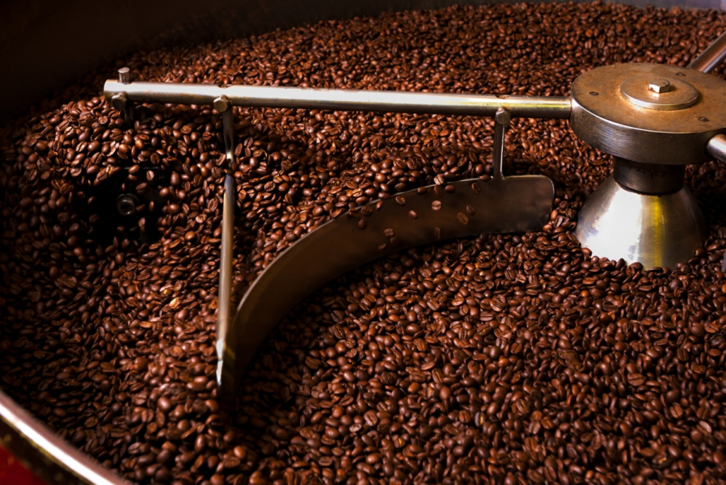
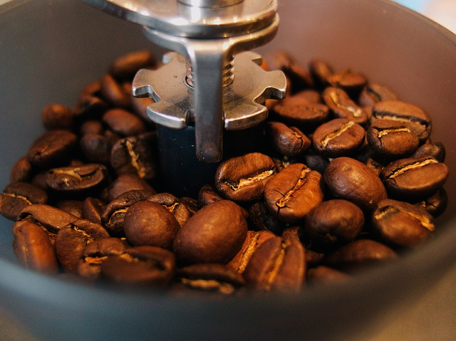
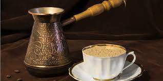

Tanaman kopi selalu berdaun hijau sepanjang tahun dan berbunga putih. Bunga ini kemudian akan menghasilkan buah yang mirip dengan ceri terbungkus dengan cangkang yang keras. Hasil dari pembuahan di bunga inilah yang disebut dengan biji kopi. Pemanenan biji kopi biasanya dilakukan secara manual dengan tangan. Pada tahap selanjutnya, biji kopi yang telah dipanen ini akan dipisahkan cangkangnya. Terdapat dua metode yang umum dipakai, yaitu dengan pengeringan dan penggilingan dengan mesin. Pada kondisi daerah yang kering biasanya digunakan metode pengeringan langsung di bawah sinar matahari. Setelah kering maka cangkang biji kopi akan lebih mudah untuk dipisahkan. Di Indonesia, biji kopi dikeringkan hingga kadar air tersisa hanya 30-35%. Metode lainnya adalah dengan menggunakan mesin. Sebelum digiling, biji kopi biasanya dicuci terlebih dahulu. Saat digiling dalam mesin, biji kopi juga mengalami fermentasi singkat. Metode penggilingan ini cenderung memberikan hasil yang lebih baik daripada metode pengeringan langsung.
Pemanggangan

Pemanggangan Kopi
Setelah dipisahkan dari cangkangnya, biji kopi telah siap untuk masuk ke dalam proses pemanggangan. Proses ini secara langsung dapat meningatkan cita rasa dan warna dari biji kopi. Secara fisik, perubahan biji kopi terlihat dari pengeringan biji dan penurunan bobot secara keseluruhan. Pori-pori di sekeliling permukaan biji pun akan terlihat lebih jelas. Warna cokelat dari biji kopi juga akan terlihat memekat.
Penggilingan

Penggilingan Kopi
Pada tahap selanjutnya, biji kopi yang telah kering digiling untuk memperbesar luas permukaan biji kopi. Dengan bertambah luasnya permukaan, maka ekstraksi akan menjadi lebih efisien dan cepat. Penggilingan yang baik akan menghasilkan rasa, aroma, dan penampilan yang baik. Hasil penggilingan ini harus segera dimasukkan dalam wadah kedap udara agar tidak terjadi perubahan cita rasa kopi.
Seni Perebusan

Perebusan Kopi
Perebusan merupakan langkah akhir dari pengolahan biji kopi hingga siap dikonsumsi. Untuk menciptakan minuman kopi yang bercita rasa tinggi, perebusan biji kopi harus dilakukan dengan baik dan sempurna. Terdapat banyak variabel dalam perebusan biji kopi, antara lain komposisi biji kopi dan air, ukuran partikel, suhu air yang dipakai, metode, dan waktu perebusan. Kesalahan kecil dalam perebusan kopi dapat menyebabkan penurunan cita rasa. Sebagai contoh, perebusan yang terlalu lama biasanya akan menimbulkan rasa kopi yang terlalu pahit. Oleh karena itu, bukanlah hal yang mudah untuk menyajikan kopi yang baik.